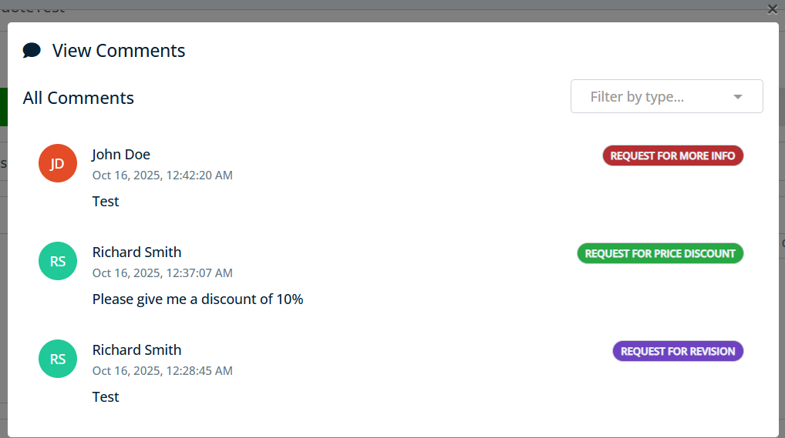
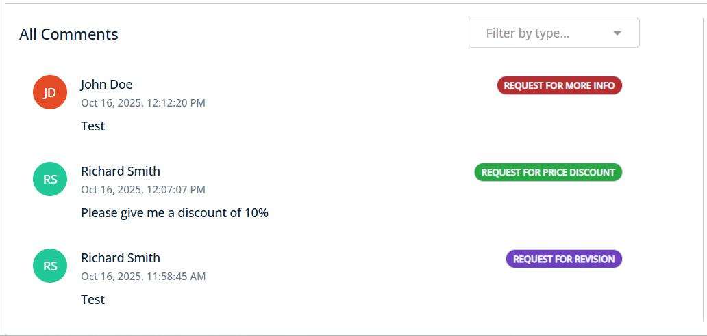

projects/congarevenuecloud/elements/src/lib/comments/view-comments/view-comments.component.ts
View comments component displays existing comments/notes for business objects with pagination and filtering capabilities. The component supports both modal and inline layouts with configurable options for display and interaction. Custom templates can be provided for filters and individual comment items to override the default appearance.
import { CommentsModule } from '@congarevenuecloud/elements';
@NgModule({
imports: [CommentsModule, ...]
})
export class AppModule {}

// Basic usage - Modal layout
```typescript
<apt-view-comments
[record]="quote"
[layout]="'modal'"
[title]="'View Comments'"
(onAction)="handleViewCommentsAction($event)">
</apt-view-comments>// Inline layout with configuration
```typescript
<apt-view-comments
[record]="quote"
[layout]="'inline'"
[config]="{
showTypeFilter: true,
pageSize: 10,
enablePagination: true
}"
(onAction)="handleViewCommentsAction($event)">
</apt-view-comments>// Custom template usage
<apt-view-comments
[record]="quote"
[layout]="'inline'"
[config]="{
showCustomTemplate: true,
showTypeFilter: false
}"
(onAction)="handleViewCommentsAction($event)">
<!-- Custom filters template -->
<div slot="filters">
<!-- Your custom filter controls here -->
<input type="text" placeholder="Search comments..." [(ngModel)]="searchTerm">
</div>
<!-- Custom comment item template -->
<div slot="comment-item">
<!-- Your custom comment layout here -->
<div class="custom-comment">
<strong>{{ note.CreatedBy?.Name }}</strong>: {{ note.Description }}
<button (click)="onCustomAction({action: 'reply', noteId: note.Id})">Reply</button>
</div>
</div>
</apt-view-comments>Example: <button (click)="onCustomAction({action: 'reply', noteId: note.Id})">Reply</button>
| selector | apt-view-comments |
| styleUrls | ./view-comments.component.scss |
| templateUrl | ./view-comments.component.html |
Methods |
Inputs |
Outputs |
constructor(modalService: BsModalService, noteService: NoteService, metadataService: MetadataService)
|
||||||||||||
|
Parameters :
|
| config |
Type : ViewCommentsConfig
|
|
Configuration options for the comments view including pagination, filtering, and display settings. See ViewCommentsConfig for more details on the structure and fields required |
| customClass |
Type : string
|
|
Custom CSS class to apply to the component for additional styling. |
| layout |
Type : "modal" | "inline"
|
Default value : 'modal'
|
|
The layout mode for the comments display. 'modal' opens in a modal dialog, 'inline' embeds in the page. |
| record |
Type : AObject
|
|
The business object record to view comments for. |
| title |
Type : string
|
|
The title text displayed at the top of the comments view. |
| onAction |
Type : EventEmitter
|
|
Event emitter that fires when user actions occur (close, filter, loadMore, etc.). See ViewCommentsOutput for more details on the structure and fields required |
| closeModal |
closeModal()
|
|
Closes the modal dialog and cleans up the modal reference.
Returns :
void
|
| enhanceComments | ||||||||
enhanceComments(comments: Note[])
|
||||||||
|
Enhance comments with precomputed UI properties for performance. This method caches computed display properties like user initials and color schemes to optimize rendering performance.
Parameters :
Returns :
Note[]
Enhanced comments array with cached UI properties and guest user substitutions |
| loadComments | |||||||||||||||
loadComments(page: number, appendToExisting: boolean)
|
|||||||||||||||
|
Loads comments for the record with pagination and filtering support.
Parameters :
Returns :
void
|
| loadInitialComments |
loadInitialComments()
|
|
Loads the initial set of comments for the record.
Returns :
void
|
| loadMoreComments |
loadMoreComments()
|
|
Loads additional comments when pagination is enabled.
Returns :
void
|
| onCloseModal |
onCloseModal()
|
|
Closes the modal and emits the close action event.
Returns :
void
|
| onCustomAction | ||||||||
onCustomAction(data: any)
|
||||||||
|
Handles custom actions from the comments view.
Parameters :
Returns :
void
|
| onTypeFilter |
onTypeFilter()
|
|
Applies comment type filtering and reloads the comments list.
Returns :
void
|
| openModal |
openModal()
|
|
Opens the modal dialog for viewing comments.
Returns :
void
|
<div class="view-comments-container" [ngClass]="customClass">
<!-- Modal Layout -->
<ng-container *ngIf="layout === 'modal'">
<!-- Modal template will be opened via modalService -->
<ng-template #modalTemplate>
<div
class="modal-header align-items-center d-flex flex-row-reverse pt-0 mt-3 px-0 pb-1"
>
<button
type="button"
class="close"
[attr.aria-label]="'COMMON.CLOSE' | translate"
(click)="onCloseModal()"
>
<span aria-hidden="true">×</span>
</button>
</div>
<div
class="modal-body d-flex flex-column justify-content-center pb-3 bg-white"
>
<h6 class="modal-title fw-bold pb-3">
<i class="fa fa-comment mr-2"></i> {{ modalTitle }}
</h6>
<!-- Default Comments Template -->
<ng-container *ngTemplateOutlet="commentsTemplate"></ng-container>
</div>
</ng-template>
</ng-container>
<!-- Inline Layout -->
<div *ngIf="layout === 'inline'" class="inline-comments">
<div class="comments-header mb-3" *ngIf="title">
<h6 class="mb-2"><i class="fa fa-comment"></i> {{ title }}</h6>
</div>
<!-- Default Comments Template -->
<ng-container *ngTemplateOutlet="commentsTemplate"></ng-container>
</div>
<!-- Default Comments Template -->
<ng-template #commentsTemplate>
<!-- Title Row (always shown) -->
<div class="d-flex justify-content-between align-items-center">
<!-- Dynamic Title based on filter -->
<div class="flex-shrink-0 mb-1">
<h5 *ngIf="!selectedType || !selectedType?.length">
{{ "COMMENTS.ALL_COMMENTS" | translate }}
</h5>
<h5 *ngIf="selectedType && selectedType?.length">
{{ selectedType }} {{ "COMMENTS.COMMENTS" | translate }}
</h5>
</div>
<!-- Default Comment Type Filter -->
<div
class="flex-shrink-0 filter-container"
*ngIf="
config?.showTypeFilter !== false &&
config?.showCustomTemplate !== true
"
>
<apt-input-field
[entity]="filterNote"
[field]="'NoteType'"
[(ngModel)]="selectedType"
(ngModelChange)="onTypeFilter()"
[placeholder]="'COMMENTS.FILTER_BY_TYPE' | translate"
[required]="false"
[showLabel]="false"
[allowClearableLookups]="true"
[cssClass]="'w-100'"
>
</apt-input-field>
</div>
</div>
<!-- Custom Filters Template -->
<ng-container *ngIf="config?.showCustomTemplate === true">
<ng-content select="[slot=filters]"></ng-content>
</ng-container>
<!-- Comments List -->
<div class="comments-list overflow-auto pr-1">
<div
*ngFor="
let note of displayedComments;
let i = index;
trackBy: trackByCommentId
"
class="comment-item"
>
<!-- Custom Comment Template -->
<ng-container *ngIf="config?.showCustomTemplate === true">
<ng-content select="[slot=comment-item]"></ng-content>
</ng-container>
<!-- Default Comment Template -->
<div
*ngIf="config?.showCustomTemplate !== true"
class="comment-item-content p-3"
>
<div class="d-flex align-items-start">
<!-- User Avatar -->
<div class="flex-shrink-0 mr-3">
<div
class="user-avatar d-flex justify-content-center align-items-center rounded-circle text-white fw-bold"
[style.background-color]="note.get('userBackgroundColor')"
style="height: 40px; width: 40px; font-size: 14px"
>
{{ note.get("userInitials") }}
</div>
</div>
<div class="flex-grow-1">
<div class="d-flex justify-content-between">
<div>
<!-- User Name -->
<div class="fw-bold text-dark">
{{ note.CreatedBy?.Name }}
</div>
<!-- Timestamp -->
<div class="mb-2">
<small class="text-muted">
{{
note.CreatedDate
| dateFormat : config?.dateFormat || DateFormat.Medium
| async
}}
</small>
</div>
</div>
<!-- Comment type -->
<div>
<span
class="badge rounded-pill text-light py-0 px-2 border"
[style.background-color]="
note._metadata?.noteTypeBackgroundColor
"
*ngIf="note.NoteType"
>
<apt-output-field
[record]="note"
[field]="'NoteType'"
[valueOnly]="true"
[editable]="false"
[showLabel]="false"
[valueClass]="'p-0'"
>
</apt-output-field>
</span>
</div>
</div>
<!-- Comment Text -->
<div class="comment-text text-dark">
{{ note.Description }}
</div>
</div>
</div>
</div>
</div>
<!-- Custom Empty State Template -->
<ng-container
*ngIf="
config?.showCustomTemplate &&
displayedComments.length === 0 &&
!loading
"
>
<ng-content select="[slot=empty-state]"></ng-content>
</ng-container>
<!-- Default Empty State -->
<div
class="text-center text-muted mt-4 empty-state"
*ngIf="
!config?.showCustomTemplate &&
displayedComments.length === 0 &&
!loading
"
>
<i class="fa fa-comments fa-2x mb-2"></i>
<p>{{ "COMMENTS.NO_COMMENTS_FOUND" | translate }}</p>
</div>
<!-- Load More Button -->
<div
class="text-center mt-3"
*ngIf="canLoadMore && config?.enablePagination !== false"
>
<button
type="button"
class="btn btn-link text-primary text-decoration-none p-0"
[ladda]="loading"
data-style="zoom-in"
data-spinner-color="black"
(click)="loadMoreComments()"
[disabled]="loading"
>
{{
config?.loadMoreButtonText ||
("COMMENTS.LOAD_MORE_COMMENTS" | translate)
}}
</button>
</div>
<!-- No more comments message -->
<div
class="text-center text-muted mt-3"
*ngIf="
!canLoadMore && displayedComments.length > (config?.pageSize || 10)
"
>
<small>{{ "COMMENTS.NO_MORE_COMMENTS" | translate }}</small>
</div>
</div>
<!-- Custom Footer Template -->
<div *ngIf="config?.showCustomTemplate">
<ng-content select="[slot=footer]"></ng-content>
</div>
</ng-template>
</div>
./view-comments.component.scss
.comment-item-content {
.comment-text {
line-height: 1.4;
word-wrap: break-word;
}
}
.comments-list {
max-height: 350px !important;
&::-webkit-scrollbar {
width: 0.375rem !important;
height: 0.375rem !important;
background: #fff !important;
}
&::-webkit-scrollbar-thumb {
background: #A8B2BB !important;
border-radius: 0.25rem !important;
}
}
.filter-container {
min-width: 200px;
}
.view-comments-container {
apt-input-field {
.form-group {
margin-bottom: 0 !important;
}
}
}